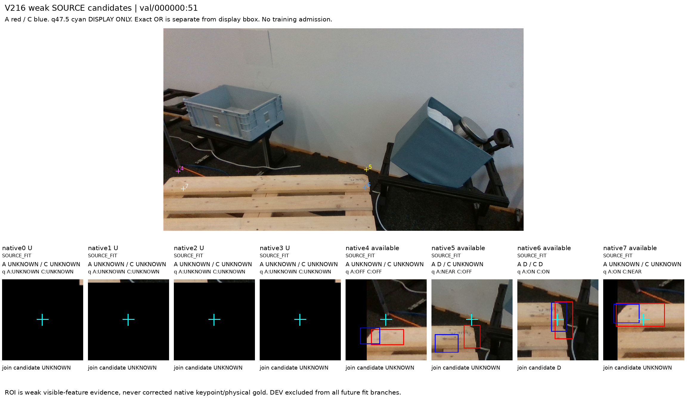
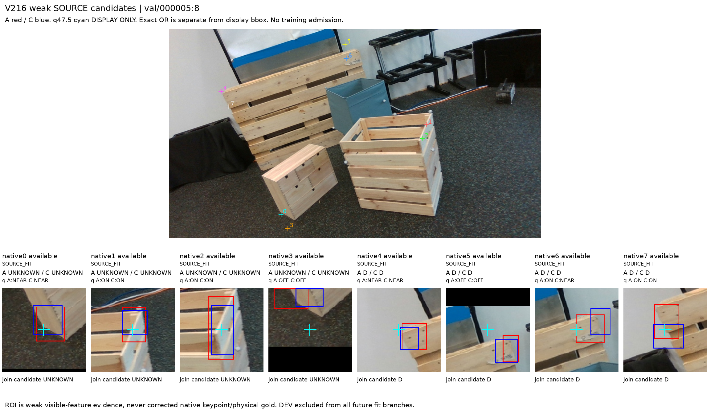
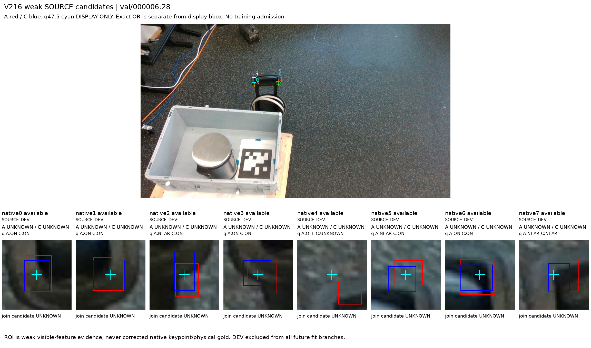

V216 · 같은 부위인가,
query는 무엇을 묻는가
원시 D 후보 11 → 약한 동일 팔레트 부위 D 97 SOURCE_FIT · 2 SOURCE_DEV / 나머지 87 UNKNOWN. 원 native 96행/U11을 모두 보존했습니다. 외부 E·SELF 양성 확정은 각각 0이며 physical native-point gold는 UNKNOWN, 모든 training admission은 false입니다.
진전은 데이터·타깃 정의의 구분입니다. 새 모델·fit·forward·평가·문턱 변경이 없고, 안정적인 외부 가림 성능 개선을 입증하지 않았습니다. 최신 실제 실사 V213은 그대로입니다.
완전 분모와 의미 검토
| 범위 | 프레임/행 | 원 U | 원시 D 후보 | 의미 검토 후 weak 부위 D | UNKNOWN | 공간 witness 후보 |
|---|
| ALL | 12/96 | 11 | 11 | 9 | 87 | 62 |
| SOURCE_FIT | 8/64 | 9 | 9 | 7 | 57 | 40 |
| SOURCE_DEV | 4/32 | 2 | 2 | 2 | 30 | 22 |
A D14 / C D17에서 원시 D 합의는 11개였습니다. 원시 값은 수정하지 않고 root가 서로 다른 feature를 고른 2개만 보류했습니다. 같은 프레임의 두 reader 동의는 gold가 아닙니다. 완벽한 mesh/정확한 3D corner가 모든 weak 관찰의 선결조건도 아닙니다.
공간 feature와 native를 구분
공간 witness 62개는 pallet 라벨 62개가 아닙니다. 목재·플라스틱 상자와 카트 손잡이도 들어 있습니다. 원 q/native로 주소화하지 못하고 explicit ROI가 추가로 필요한 feature는 LOCAL_FEATURE_ONLY이며 unconditioned native head에 복사할 수 없습니다.
| 범위 | ON | NEAR | OFF | UNKNOWN | ROI 유효/실패/없음 |
|---|
| ALL | 24 | 17 | 11 | 44 | 79/4/13 |
| SOURCE_FIT | 16 | 11 | 8 | 29 | 49/4/11 |
| SOURCE_DEV | 8 | 6 | 3 | 15 | 30/0/2 |
ON24/NEAR17/OFF11/UNKNOWN44는 ROI feature와 원 q의 관계입니다. native 좌표 정확도·가시성 정답이 아닙니다. query OFF, 다른 물체, 배경·빈 crop을 E로 만들지 않았습니다. 정확한 두 ROI 픽셀 OR를 보존했고 4 invalid를 줄이거나 이동하지 않았습니다. 79 valid도 semantic 동일 부위나 실제 alpha proof는 아닙니다.
native0..7
| native | N | 원 U | 공간 witness | 원시 D 후보 | 검토 후 weak 부위 D | UNKNOWN | ON/NEAR/OFF/UNKNOWN |
|---|
| 0 | 12 | 2 | 8 | 2 | 2 | 10 | 1/4/1/6 |
| 1 | 12 | 3 | 8 | 0 | 0 | 12 | 5/0/1/6 |
| 2 | 12 | 3 | 7 | 0 | 0 | 12 | 2/1/1/8 |
| 3 | 12 | 3 | 6 | 1 | 0 | 12 | 3/0/2/7 |
| 4 | 12 | 0 | 6 | 3 | 3 | 9 | 2/5/3/2 |
| 5 | 12 | 0 | 8 | 1 | 1 | 11 | 3/3/2/4 |
| 6 | 12 | 0 | 10 | 2 | 2 | 10 | 4/3/1/4 |
| 7 | 12 | 0 | 9 | 2 | 1 | 11 | 4/1/0/7 |
고정 시각 근거
root가 실제 확인한 12 overlay+추가 clean96 두 장의 receipt를 인용합니다. 이번 집계 코드의 새 이미지 decode/toolview/browser render는 0입니다. 원 q/L/U/RAW96는 그대로입니다.
고정 frame 0 · val/000000:51
n6은 같은 팔레트 상판 끝 윤곽의 weak 근거가 남습니다. n5의 판 끝/판 면 선택 차이와 원 U0..3은 그대로 보존했습니다.

고정 frame 6 · val/000005:8
뒤의 세운 팔레트와 앞 목재 상자가 함께 있습니다. n4/5/6의 팔레트 판 끝 근거와 n0..3의 다른 상자 feature를 분리했고 n7은 서로 다른 feature 범위로 보류했습니다.

고정 frame 10 · val/000006:28
q8이 카트 손잡이에 놓였습니다. 선명한 edge와 query ON 합의가 있어도 pallet native D/E로 바꿀 수 없음을 보여줍니다.

내부 SOURCE_FIT / SOURCE_DEV
원래 outer TRAIN은 바꾸지 않았습니다. 8 FIT 프레임/64행/U9와 4 DEV 프레임/32행/U2이며 4 prefix마다 2 FIT/1 DEV입니다. 메타데이터 component 12개가 물리적 독립성을 인증하지 않습니다. appearance는 이미 노출됐고 fresh blind/HOLD가 아닙니다. 미래 DEV와 파생 variant는 모든 loss·sampler·정규화에서 제외해야 합니다. 현재 모든 학습 admission은 false입니다.
| 내부 역할 | native | N | 원 U | 원시 D 후보 | 검토 후 weak 부위 D | UNKNOWN | 공간 witness |
|---|
| SOURCE_FIT | 0 | 8 | 1 | 2 | 2 | 6 | 6 |
| SOURCE_FIT | 1 | 8 | 3 | 0 | 0 | 8 | 5 |
| SOURCE_FIT | 2 | 8 | 3 | 0 | 0 | 8 | 5 |
| SOURCE_FIT | 3 | 8 | 2 | 1 | 0 | 8 | 4 |
| SOURCE_FIT | 4 | 8 | 0 | 2 | 2 | 6 | 3 |
| SOURCE_FIT | 5 | 8 | 0 | 1 | 1 | 7 | 5 |
| SOURCE_FIT | 6 | 8 | 0 | 2 | 2 | 6 | 6 |
| SOURCE_FIT | 7 | 8 | 0 | 1 | 0 | 8 | 6 |
| SOURCE_DEV | 0 | 4 | 1 | 0 | 0 | 4 | 2 |
| SOURCE_DEV | 1 | 4 | 0 | 0 | 0 | 4 | 3 |
| SOURCE_DEV | 2 | 4 | 0 | 0 | 0 | 4 | 2 |
| SOURCE_DEV | 3 | 4 | 1 | 0 | 0 | 4 | 2 |
| SOURCE_DEV | 4 | 4 | 0 | 1 | 1 | 3 | 3 |
| SOURCE_DEV | 5 | 4 | 0 | 0 | 0 | 4 | 3 |
| SOURCE_DEV | 6 | 4 | 0 | 0 | 0 | 4 | 4 |
| SOURCE_DEV | 7 | 4 | 0 | 1 | 1 | 3 | 3 |
GT가 없었던 것이 아닙니다
V153의 과거 영수증에는 공개 MR6D GT/depth/전체·가시 마스크 보존이 기록돼 있습니다. V154 instance/role-query bridge와 V159 nominal-part/mask/owner 진단도 이미 있으므로 첫 GT 활용으로 부르지 않습니다. 이번 phase 실제 GT 값 접근은 0이고 현재 payload 존재를 재확인하지 않았습니다.
다음 한 가지 점검은 고정 SOURCE TRAIN의 instance/native-part/query/crop 대응과 retained full/visible masks·depth 계약을 대조하는 bounded audit입니다. 정확 TRAIN whitelist·별도 실제 접근 범위가 먼저 필요합니다. q/L/U·순열을 유지하고 GT-best 대응/PnP/재중심화·mask 음성→E 자동변환을 하지 않습니다. GT text 준비도
보존 이력과 재현
V1 join은 미실행이며 그대로 보존했습니다. optional size가 다른 artifact binding을 whole-dict 비교하던 준비 어댑터만 V2 path+SHA identity로 수리했습니다. 원 판단·ROI·수치 로직은 그대로입니다. V2는 한 번 실행되어 exit0/독립 저장 QA PASS입니다.
python -B join_preparation_b_v2/join_and_render_saved_two_reader_observations_v2.py --entry ROOT_ACTUAL_TWO_READER_JOIN_AND_OVERLAY_V2_ENTRY.json
python -B report_preparation_a/build_saved_v216_reports.py
exclusive 출력이므로 기존 경로에 재실행하지 않습니다. 새 SOURCE weak 관찰은 기록했지만, 새 학습 타깃 채택·paired controls·fit은 하지 않았습니다. 사람 gold·물리 native-point gold·자연 가림 완전 정답·인과적 모델 효과·전체 공개 데이터의 대표성을 주장하지 않습니다.
원문·QA·코드
기계가 읽는 결과 · Markdown 보고서